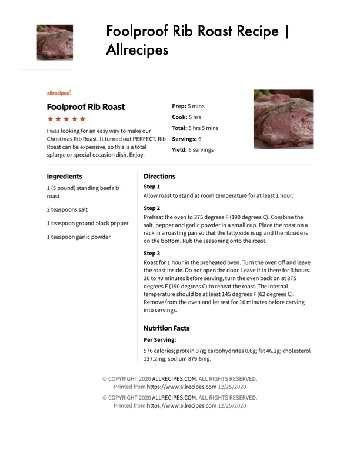

Foolproof Rib Roast

Original cookbook page 135
I was looking for an easy way to make our Christmas Rib Roast. It turned out PERFECT. Rib Roast can be expensive, so this is a total splurge or special occasion dish. Enjoy.
Prep: 5 mins • Cook: 5 hrs • Total: 5 hrs 5 mins
Ingredients
- 1 (5 pound) standing beef rib roast
- 2 teaspoons salt
- 1 teaspoon ground black pepper
- 1 teaspoon garlic powder
Instructions
- Allow roast to stand at room temperature for at least 1 hour.
- Preheat the oven to 375 degrees F (190 degrees C). Combine the salt, pepper and garlic powder in a small cup. Place the roast on a rack in a roasting pan so that the fatty side is up and the rib side is on the bottom. Rub the seasoning onto the roast.
- Roast for 1 hour in the preheated oven. Turn the oven off and leave the roast inside. Do not open the door. Leave it in there for 3 hours. 30 to 40 minutes before serving, turn the oven back on at 375 degrees F (190 degrees C) to reheat the roast. The internal temperature should be at least 145 degrees F (62 degrees C). Remove from the oven and let rest for 10 minutes before carving into servings.
Recipe #135 from collection